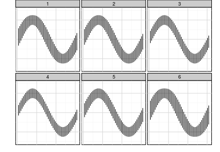
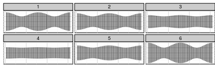
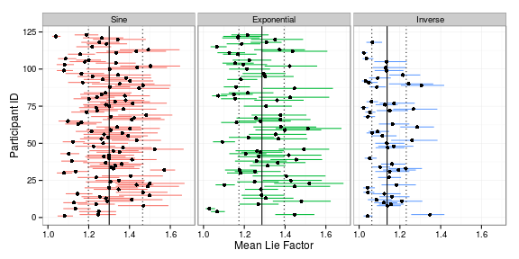

Perception of Statistical Graphics
Susan VanderPlas
April 1, 2015
Outline
-
Signs of the Sine Illusion: Why We Need to Care
- Describes the illusion with real-world context
- Proposes geometry-based transformations
- Presents data from a user study examining the utility of the transformations
- Accepted to JCGS, July 2014
-
The Curse of Three Dimensions:
Why Your Brain is Lying to You- Examines cause of the sine illusion (depth perception)
- Presents a case study of an individual without depth perception
- Presents data from another user study showing the strength of the illusion
- Intended for submission to IEEE Transactions on Applied Perception
Outline
-
Spatial Reasoning and Data Displays
- Examines visual skills necessary for lineup evaluation
- Compares participant performance on lineups to performance on validated tests of visual reasoning ability
- Submitted to InfoVis 2015
-
Statistical Graphics and the Hierarchy of Visual Features
- Modifies the lineup protocol to test two competing hypotheses
- Demonstrates the effect of graphical features of statistical plots (color, trend lines) on perception of displayed data
- Connects gestalt perceptual rules to chart design
- Intended for submission to JCGS or JASA
Sine Illusion

The Curse of Three Dimensions
Why Your Brain is Lying to You
Three-Dimensional Context
The Psychological Lie Factor
$$\text{Lie Factor} = \frac{\text{size of effect shown in the chart}}{\text{size of effect in the data}}$$
$$\text{Psych. Lie Factor} = \frac{\text{size of effect perceived}}{\text{size of effect shown in the chart}}$$
The Psychological Lie Factor

In which graph is the size of the curve most consistent?
The Psychological Lie Factor

The Psychological Lie Factor

The Psychological Lie Factor

The Psychological Lie Factor
Lie Factor $D_k$
$$\begin{align}D_k &= \frac{\text{max line length in sub-plot } k}{\text{min line length in sub-plot } k} \\&= \text{max line length in sub-plot } k\end{align}$$As not all stimuli contain uncorrected plots...
Psychological Lie Factor
For participant $i$, plot $j$, $$P_{ij}=D_{ijk}/\min_{1\leq k \leq 6} D_{ijk}$$Results

Estimated posterior densities for participant-specific $\theta_i$ (in color) and overall density for $\theta$ shown in black.
Results

95% posterior predictive intervals for $\theta_i$, for each function type. Vertical lines indicate the median estimate of overall $\theta$ with a 95% credible interval.
Case Study
|
D.W., a woman with strabismic amblyopia (lazy eye)
|
 |
We asked DW to evaluate several plots of the sine illusion at various correction levels, as well as other depth illusions
Case Study
Results
- D.W. was not susceptible to the sine illusion or the Muller-Lyer illusion
- D.W. identified the partially corrected images as having the same line length as well
- Only the fully corrected plot of $y=\exp(x)$ seemed to have lines of different length